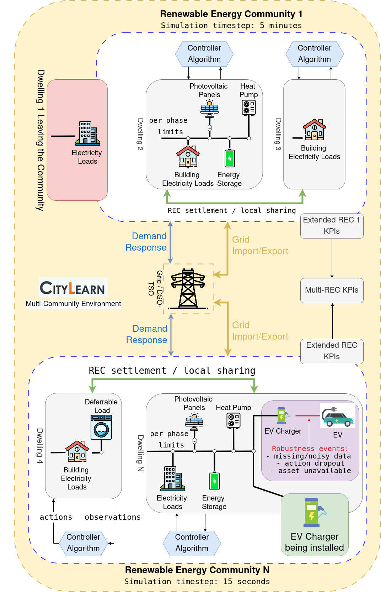
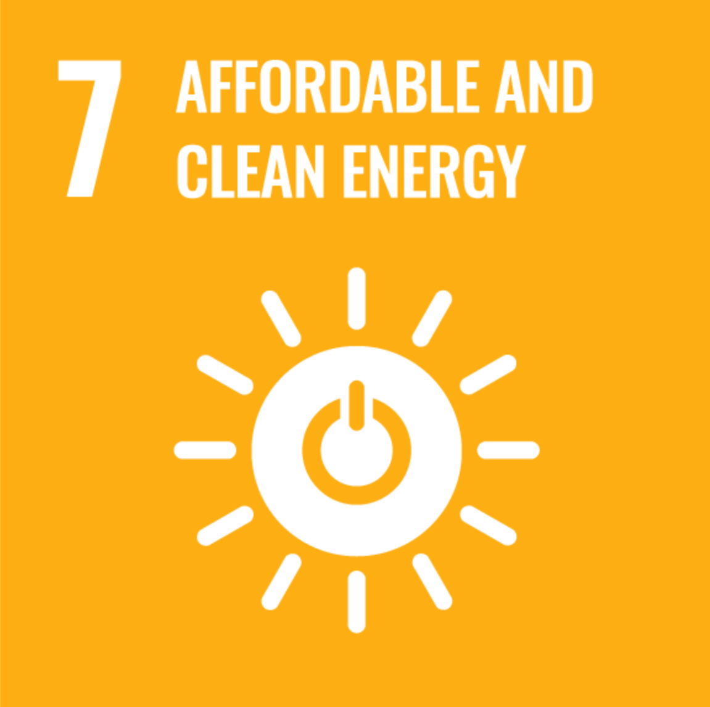
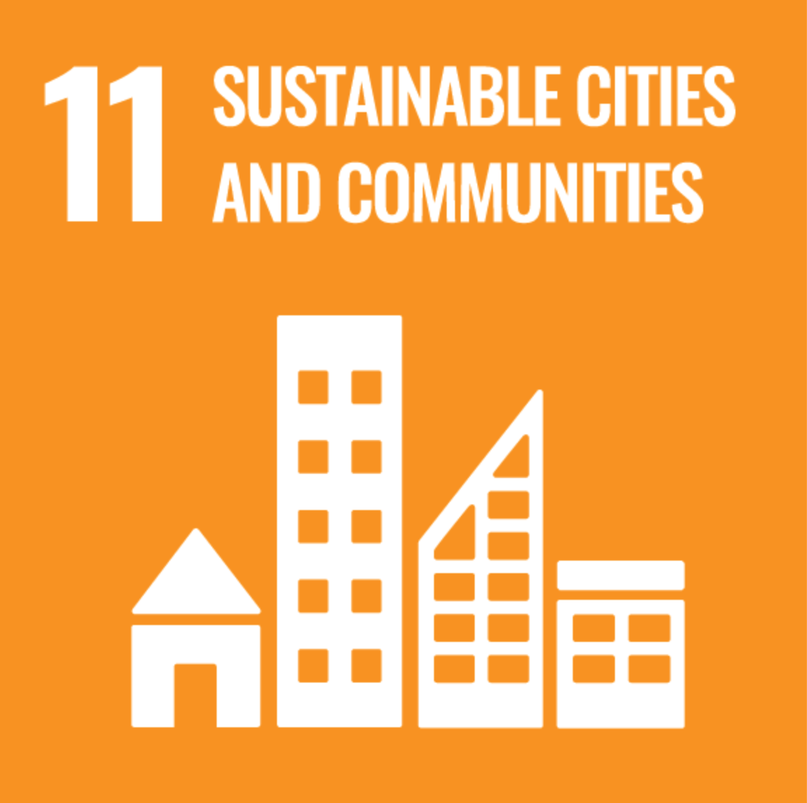
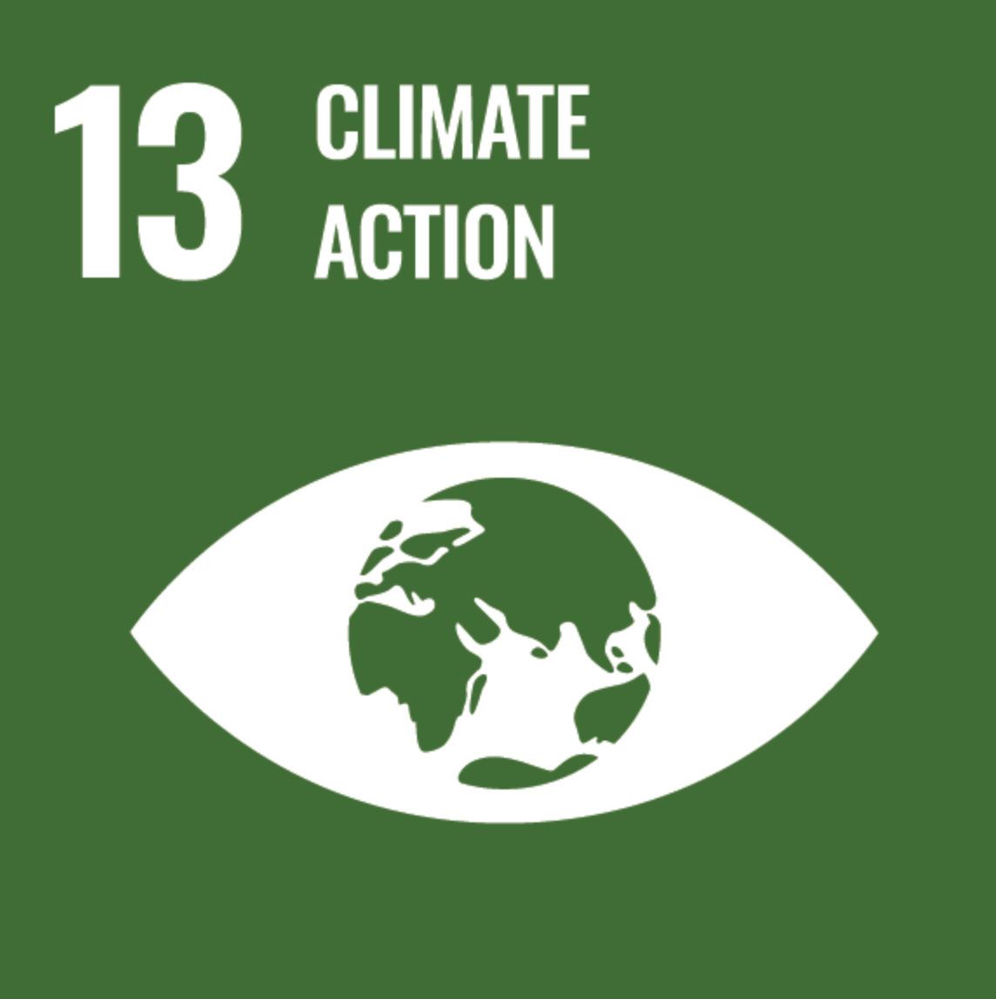

CityLearn
CityLearn is an open-source Gymnasium environment for building energy coordination, demand response and reinforcement learning [11, 26, 28]. It provides a common environment in which controllers can be tested using the same scenarios, interfaces and performance indicators.
CityLearn v3 extends this foundation to configurable renewable energy communities: buildings, PV, batteries, EVs and flexible loads can be studied with service deadlines, electrical limits, local settlement, changing members and assets, and data or equipment failures. It incorporates the extensions developed by the Soft-CPS Research Group alongside the project’s building and thermal models.
Start here
Installation: install the package and optional dependencies.
Your first simulation: run your first complete simulation.
Features and configuration: choose and configure available features.
How to read the scorecard: interpret costs, energy and service together.


Community configurations and services in CityLearn v3. Individual scenarios can use different time resolutions; synchronized multi-community runs use a common timestep.
Community and sustainability
This output is listed in the Digital Public Goods Alliance Registry and contributes to the following UN Sustainable Development Goals (SDGs):



Applications
CityLearn has been utilized in the following projects and publications: see Publications and applications for studies grouped by application, and References for the bibliography.
Cite CityLearn
The following publications describe CityLearn v2 and v3. Cite the work relevant to the version and features used in your study.
CityLearn v2
@article{doi:10.1080/19401493.2024.2418813,
author = {Nweye, Kingsley and Kaspar, Kathryn and Buscemi, Giacomo and Fonseca, Tiago and Pinto, Giuseppe and Ghose, Dipanjan and Duddukuru, Satvik and Pratapa, Pavani and Li, Han and Mohammadi, Javad and Lino Ferreira, Luis and Hong, Tianzhen and Ouf, Mohamed and Capozzoli, Alfonso and Nagy, Zoltan},
title = {CityLearn v2: energy-flexible, resilient, occupant-centric, and carbon-aware management of grid-interactive communities},
journal = {Journal of Building Performance Simulation},
volume = {0},
number = {0},
pages = {1--22},
year = {2024},
publisher = {Taylor \& Francis},
doi = {10.1080/19401493.2024.2418813},
url = {https://doi.org/10.1080/19401493.2024.2418813},
}
CityLearn v3
The v3 paper is available as an arXiv preprint [5].
@misc{fonseca2026citylearnv3,
author = {Fonseca, Tiago and Ferreira, Luis Lino and Sousa, Armando and Mohammadi, Ava and Nagy, Zoltan},
title = {{CityLearn v3}: A Configurable Simulation and Evaluation Framework for Realistic Control Studies of Renewable Energy Communities},
year = {2026},
eprint = {2609.21570},
archivePrefix = {arXiv},
primaryClass = {cs.MA},
doi = {10.48550/arXiv.2609.21570},
url = {https://arxiv.org/abs/2609.21570},
note = {Preprint}
}